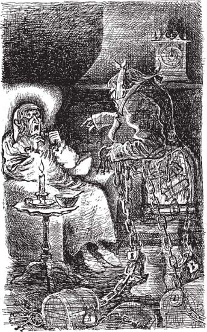

3
Listen to Part 1:

Bóng ma Marley
Ăn tối xong, Scrooge đi bộ về nhà. Ông đi qua nhiều con phố cho đến khi đến trước cửa nhà mình. Ngôi nhà đồ sộ và cổ kính. Bảy năm trước, nó từng thuộc về Jacob Marley. Scrooge chỉ ở có hai phòng trong nhà, phần còn lại thì tối tăm và trống rỗng.
Scrooge móc chùm chìa khóa nặng trịch trong túi ra mở cánh cửa gỗ lớn phía trước. Giữa cánh cửa có một cái khoen gõ bằng kim loại. Bình thường, Scrooge không bao giờ để mắt đến nó. Nhưng tối nay trông cái khoen gõ này khác lạ lắm. Mắt Scrooge cứ hoa lên. Ông nhìn kỹ hơn và thấy mặt Marley đang ở chính giữa cái khoen gõ!
Ông lão vô cùng kinh ngạc. Ông mở cửa và nhìn ra sau. Nhưng sau cánh cửa không có cái gáy nào hết!
Ông buột miệng "đồ vớ vẩn", rồi đóng sập cửa lại.
Scrooge thắp nến và leo lên cầu thang lớn để về phòng. Ông mở khóa cửa, bước vào rồi vội khóa cửa lại. Ông thay đồ ngủ, ngồi vào chiếc ghế gần lò sưởi nhỏ xíu. Rồi ông lại nhìn thấy khuôn mặt Marley lần nữa - trong ngọn lửa lò sưởi!
Bỗng nhiên, một chiếc chuông ở trên đầu Scrooge bắt đầu đổ chuông. Rồi đến chiếc thứ hai! Thứ ba! Và thứ tư! Tiếng chuông đổ khắp căn nhà rộng lớn, trống trải. Ngày trước, người ta dùng những chiếc chuông này để gọi người hầu đến các phòng khác nhau. Nhưng Scrooge sống một mình. Nhà Scrooge chẳng có người hầu nào hết.
Tiếng chuông dừng lại. Rồi Scrooge lại nghe thấy một âm thanh khác. Đó là tiếng leng keng, leng keng nghe ngày càng lớn. Ai đó đang kéo những sợi xích kim loại trên sàn nhà ở dưới tầng. Và giờ thì có người đang kéo những sợi xích kim loại đó lên cầu thang.
Scrooge bảo: "Chuyện này không thể xảy ra được! Tôi sẽ không tin đâu.".
Tiếng leng keng ngày một lớn hơn. Rồi âm thanh đó đi thẳng qua cánh cửa vào phòng Scrooge. Bất thình lình, Scrooge nhìn thấy Jacob Marley. Ông thấy khuôn mặt ông ta từng nhìn thấy trên khoen gõ cửa và trong ngọn lửa lò sưởi. Ông thấy khuôn mặt, mái tóc, áo khoác và đôi giày của Marley. Ông thấy một tấm vải trắng quấn quanh mặt và cằm Marley. Nhưng Scrooge cũng thấy cánh cửa. Ông có thể nhìn thẳng qua Marley! Đây là ma sao?
Listen to Part 2:
Toàn thân Marley quấn đầy những sợi xích khổng lồ nối xuống sàn nhà. Trên những sợi xích có những thứ mà Scrooge nhận ra. Đó là những chiếc hộp đựng tiền, chìa khóa, ổ khóa và sổ kế toán.
Scrooge hỏi: "Ngươi là ai?".
Bóng ma đáp lại: "Hỏi ta là ta đã từng là ai.".
Scrooge bảo: "Đồ vớ vẩn! Ngươi đã từng là ai?".

Scrooge có thể nhìn thẳng qua Marley! Đây là ma sao?
Nó nói: "Hồi còn sống, chúng ta đã từng hợp tác làm ăn với nhau. Ta là cộng sự của ngươi, Jacob Marley.".
Mục lục
- Trang tiêu đề
- Nội dung
- Ghi chú về tác giả
- Ghi chú về cuộc sống ở Anh vào thế kỷ 19
- 1 Ebenezer Scrooge
- 2 Khách viếng thăm Scrooge
- 3 Hồn ma của Marley
- 4 Tin tức cho Scrooge
- 5 Hồn ma của Giáng sinh quá khứ
- 6 Scrooge khi còn là một cậu bé
- 7 Giáng sinh với nhà Fezziwigs
- 8 Cô gái yêu Scrooge
- 9 Hồn ma của món quà Giáng sinh
- 10 Giáng sinh với gia đình Cratchits
- 11 Một mùa Giáng sinh vui vẻ ở khắp mọi nơi
- 12 Hồn ma của Giáng sinh sắp đến
- 13 Tiny Tim
- 14 Một người đàn ông đã thay đổi
- Các điểm chính để hiểu
- Trang bản quyền